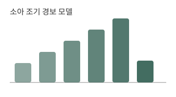
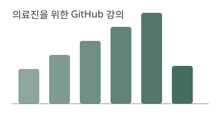

소아 조기 경보 모델
다기관 외부 검증 연구. 분석 코드는 합성 데이터로 재현할 수 있게 공개했습니다.
(준비 중)소아청소년과 전문의 · 의료 인공지능 연구자
소아 환자의 진료 데이터를 이용한 조기 경보 모델을 연구하고, 진료 현장에서 쓸 수 있는 도구로 만드는 일을 합니다.

다기관 외부 검증 연구. 분석 코드는 합성 데이터로 재현할 수 있게 공개했습니다.
(준비 중)
강의 자료를 CC BY 4.0으로 공개하고 GitHub Pages로 게시했습니다.
자세히 보기 →연구실 구성원, 연구 주제, 공개 자료를 소개하는 사이트입니다.
(준비 중)| 기간 | 학위·경력 | 기관 |
|---|---|---|
| 20XX–현재 | 임상조교수 | ○○대학교병원 소아청소년과 |
| 20XX | 의학박사(PhD) | ○○대학교 대학원 |
| 20XX | 의학사(MD) | ○○대학교 의과대학 |
※ 위 논문은 템플릿용 예시입니다. 실제 논문으로 바꿔 쓰세요.
공동 연구·강의 문의는 소속 기관 이메일로 연락 주세요.
○○대학교 의과대학 소아청소년과학교실